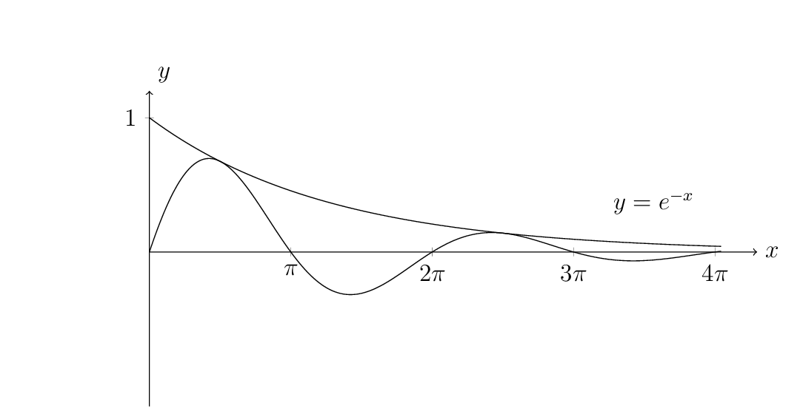

Contact points:
\[
e^{-x}=e^{-x}\sin x
\]
\[
\sin x=1\implies x_n=\frac{(4n-3)\pi}{2}
\]
\[
\begin{aligned}
A_n
&=\int_{x_n}^{x_{n+1}}e^{-x}(1-\sin x)\,dx\\
&=\left[-e^{-x}+\frac12e^{-x}(\sin x+\cos x)\right]_{x_n}^{x_{n+1}}\\
&=\frac12\left(e^{-\frac{(4n-3)\pi}{2}}-e^{-\frac{(4n+1)\pi}{2}}\right)\\
&=\frac12(e^{2\pi}-1)e^{-(4n+1)\pi/2}
\end{aligned}
\]
\[
\begin{aligned}
\sum_{n=1}^{\infty}A_n
&=\frac12(e^{2\pi}-1)\sum_{n=1}^{\infty}e^{-\frac{(4n+1)\pi}{2}}\\
&=\frac12(e^{2\pi}-1)\cdot \frac{e^{-\frac{5\pi}{2}}}{1-e^{-2\pi}}\\
&=\frac12e^{-\frac{\pi}2}
\end{aligned}
\]